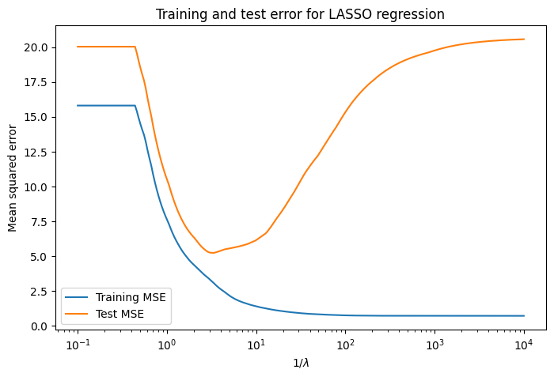
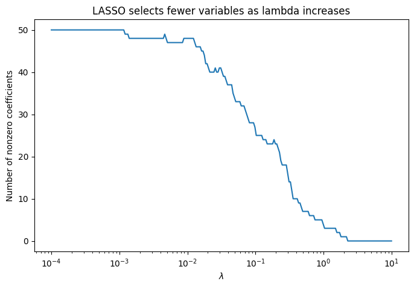
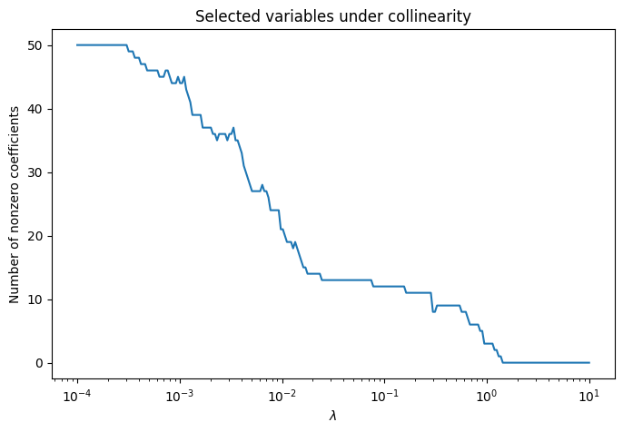

The issue is that the absolute value function is not differentiable at zero. Since
\[
|w_j|
\]
has a sharp corner at \(w_j=0\), the objective is convex but not smooth. So, in general, there is no simple closed-form matrix formula like ridge.
This is not just a technical nuisance. The sharp corner is exactly what allows LASSO to set coefficients equal to zero.
15.3 Solving LASSO in practice
Since the LASSO objective is convex, but not differentiable everywhere. We cannot solve the problem by ordinary differentiation in the same way we solved ridge.
15.3.1 The subgradient idea
To handle the non-differentiability, we use the idea of a subgradient.
For \(w_j \neq 0\), the derivative of \(|w_j|\) is ordinary:
At \(w_j = 0\), the derivative does not exist. The left derivative is \(-1\), while the right derivative is \(1\). The subgradient fills in this missing idea here.
A subgradient is a generalization of the derivative for convex functions that may have corners.
For a differentiable convex function, the derivative gives the slope of the tangent line. At a minimum, the derivative must be zero.
For a non-differentiable convex function, there may be many valid supporting slopes at a point. These slopes are called subgradients. The set of all subgradients is called the subdifferential.
At zero, there is no unique tangent slope. Instead, every slope between \(-1\) and \(1\) defines a valid supporting line to the absolute value function. Therefore,
where \((\cdot)_+ = \max(\cdot,0)\) is the positive part. Soft-thresholding does two things at once:
it shrinks values toward zero
it sets small values exactly equal to zero
Coordinate descent for LASSO
Coordinate descent is one of the most common ways to solve LASSO.
The idea is simple: update one coefficient at a time, holding all the others fixed. It turns out that each coordinate update has a closed-form solution.
Suppose we are updating coordinate \(j\). We temporarily treat all other coefficients as fixed.
Define the partial residual
\[
r_j = y - \sum_{k \neq j} x_k w_k.
\]
This is the residual we would have if feature \(j\) were removed from the current model and the coefficients were otherwise fixed.
With all other coefficients fixed, the only variable is \(w_j\), so the LASSO problem reduces to the one-dimensional problem
The first term does not depend on \(w_j\), so we can ignore it when minimizing. Using the definitions of \(a_j\) and \(c_j\), the coordinate-wise objective is equivalent to minimizing
Because \(a_jw_j > 0\), \(-c_j > \lambda\), and \(\lambda > 0\), this quantity is positive. So the subgradient cannot contain zero for any \(w_j > 0\).
Therefore the minimizer must be negative. On the negative side,
The coordinate descent update comes directly from the subgradient optimality condition for the one-dimensional LASSO problem. If the coordinate-wise correlation \(c_j\) is not large enough in magnitude to overcome the penalty \(\lambda\), then zero satisfies the optimality condition.
To make this clear, assume that the columns of \(X\) have been standardized so that
\[
\frac{1}{N}x_j^\top x_j = 1,
\]
then this simplifies to
\[
w_j
\leftarrow
S(c_j,\lambda).
\]
So, for standardized predictors, updating \(w_j\) is just soft-thresholding the correlation between feature \(j\) and the current partial residual.
The interpretation is: after accounting for the other variables, feature \(j\) enters the model only if it is sufficiently correlated with the remaining residual.
If
\[
|c_j| \leq \lambda,
\]
then
\[
S(c_j,\lambda)=0,
\]
so the updated coefficient is exactly zero.
If
\[
|c_j| > \lambda,
\]
then the coefficient is nonzero, but shrunk toward zero.
Thus, coordinate descent makes the variable selection behavior of LASSO very explicit.
Let’s look at a minimal implementation:
import numpy as npfrom sklearn.linear_model import Lassofrom sklearn.preprocessing import StandardScaler
rng = np.random.default_rng()N =100D =20X = rng.normal(size=(N, D))w_true = np.zeros(D)w_true[[1, 4, 7]] = [2.5, -1.8, 1.2]y = X @ w_true + rng.normal(scale=0.7, size=N)# Center y and standardize X.# This lets us fit without an intercept.X = StandardScaler().fit_transform(X)y = y - y.mean()
Now we do the coordinate descent:
def soft_threshold(c, lam):if c > lam:return c - lamelif c <-lam:return c + lamelse:return0.0def lasso_coordinate_descent(X, y, lam, max_iter=1000, tol=1e-8): N, D = X.shape w = np.zeros(D)# a_j = (1/N) x_j^T x_j a = np.sum(X **2, axis=0) / Nfor iteration inrange(max_iter): max_change =0.0for j inrange(D): old_w_j = w[j]# Current fitted values using all coordinates y_hat = X @ w# Partial residual:# r_j = y - sum_{k != j} x_k w_k## Since y_hat = sum_k x_k w_k,# we remove all fitted values, then add back x_j w_j. r_j = y - y_hat + X[:, j] * old_w_j# c_j = (1/N) x_j^T r_j c_j = (X[:, j] @ r_j) / N# Coordinate update new_w_j = soft_threshold(c_j, lam) / a[j]# Store update w[j] = new_w_j max_change =max(max_change, abs(new_w_j - old_w_j))if max_change < tol:breakreturn w, iteration +1
lam =0.10w_cd, n_iter = lasso_coordinate_descent(X, y, lam)print(f"Coordinate descent finished in {n_iter} iterations")print(np.round(w_cd, 3))
Another way to solve LASSO is proximal gradient descent.
This method separates the objective into two parts:
\[
J(w)=
f(w) + g(w),
\]
where
\[
f(w)=
\frac{1}{2N}\|y - Xw\|_2^2
\]
is the smooth squared error part, and
\[
g(w)=
\lambda \|w\|_1
\]
is the non-smooth penalty part.
The gradient of the smooth part is
\[
\nabla f(w)=
-\frac{1}{N}X^\top(y - Xw).
\]
If we were only minimizing the squared error part, we could take an ordinary gradient descent step:
\[
u=
w - \eta \nabla f(w),
\]
where \(\eta > 0\) is a step size.
For LASSO, we do not stop after this gradient step. Instead, we apply soft-thresholding:
\[
w^{new}=
S(u,\eta \lambda),
\]
where \(S\) is applied coordinate by coordinate. This is called the proximal step. Essentially it is projecting the update onto the correct sparsity-inducing space.
So proximal gradient descent alternates between reducing prediction error and pulling coefficients toward zero.
import numpy as npdef soft_threshold_vector(u, lam):return np.sign(u) * np.maximum(np.abs(u) - lam, 0.0)def lasso_proximal_gradient_descent(X, y, lam, eta=None, max_iter=1000, tol=1e-8): N, D = X.shape w = np.zeros(D)for iteration inrange(max_iter): old_w = w.copy()# Current fitted values y_hat = X @ w# Current residual residual = y - y_hat# Gradient of the smooth squared-error part:## f(w) = (1 / (2N)) ||y - Xw||_2^2## grad f(w) = -(1 / N) X^T (y - Xw) grad =-(X.T @ residual) / N# Ordinary gradient descent step on the smooth part u = w - eta * grad# Proximal step for the L1 penalty w = soft_threshold_vector(u, eta * lam)# Check convergence max_change = np.max(np.abs(w - old_w))if max_change < tol:breakreturn w, iteration +1, eta
from sklearn.linear_model import Lassolam =0.10w_pgd, n_iter, eta = lasso_proximal_gradient_descent( X, y, lam, max_iter=10000, tol=1e-8, eta =1E-3)lasso = Lasso( alpha=lam, fit_intercept=False, max_iter=10000, tol=1e-10)lasso.fit(X, y)w_sklearn = lasso.coef_print(f"Proximal gradient descent finished in {n_iter} iterations")print(f"Step size eta = {eta:.4f}")print()print("Proximal gradient coefficients:")print(np.round(w_pgd, 3))print()print("sklearn coefficients:")print(np.round(w_sklearn, 3))
\[
\min_w \hat{R}(w)
\quad \text{s.t.} \quad
\|w\|_1 \le t.
\]
In the penalized form, \(\lambda\) controls how much we penalize the total absolute size of the coefficients.
In the constrained form, \(t\) sets a hard budget on the total absolute coefficient size.
These are two ways of parameterizing the same tradeoff:
small \(t\) corresponds to strong regularization
large \(t\) corresponds to weak regularization
large \(\lambda\) corresponds to strong regularization
small \(\lambda\) corresponds to weak regularization
The exact mapping between \(\lambda\) and \(t\) is usually not written down explicitly. But for each solution in one form, there is a corresponding value in the other form.
Another way to motivate LASSO is as a tractable approximation to an \(L_0\)-constrained problem. Ideally, we might want to solve
where \(\|w\|_0\) counts the number of nonzero coefficients. This directly limits the model to use at most \(k\) predictors. However, the \(L_0\) constraint is nonconvex and generally difficult to optimize. LASSO replaces this hard sparsity constraint with the convex constraint \(\|w\|_1 \le t\). The \(L_1\) constraint does not count nonzero coefficients directly, but it encourages sparsity and is much easier to optimize.
if interact isnotNone: interact( plot_geometry, mode=Dropdown( options=["constrained", "penalized"], value="constrained", description="view" ), t=FloatSlider( value=1.0, min=0.05, max=4.0, step=0.05, description="t" ), lam=FloatSlider( value=0.2, min=0.0, max=5.0, step=0.05, description="lambda" ) );else:print("ipywidgets is not installed, so showing a static constrained-form plot.") plot_geometry(mode="constrained", t=1.0, lam=0.2)
Notice that OLS has elliptical loss contours. The unconstrained solution is the center of the smallest ellipse.
LASSO restricts us to lie inside an \(\ell_1\) ball:
\[
\|w\|_1 \le t.
\]
In two dimensions, this is a diamond. The LASSO solution is the point where the smallest loss contour first touches the diamond.
This is similar to ridge, except the constraint region has corners. These corners lie on the coordinate axes. When the optimum occurs at one of these corners, one coefficient is exactly zero.
This geometric picture is the main reason LASSO produces sparse solutions.
Ridge uses a round \(\ell_2\) ball
LASSO uses a diamond-shaped \(\ell_1\) ball
Because the ridge ball is smooth, the point of tangency usually does not occur exactly on an axis. So ridge shrinks coefficients, but usually does not set them exactly to zero.
Because the LASSO ball has corners on the axes, the point of tangency often lands on an axis. This gives coefficients exactly equal to zero.
15.5 LASSO and correlated variables
LASSO behaves differently from ridge when variables are highly correlated.
Suppose two features are nearly identical:
\[
x_2 \approx x_1.
\]
The model is
\[
y \approx w_1 x_1 + w_2 x_2.
\]
Since the two features contain almost the same information, many pairs \((w_1,w_2)\) lead to similar predictions. For ridge, the \(\ell_2\) penalty often spreads weight across correlated variables.
LASSO often behaves differently. Because it prefers sparse solutions, it may choose one variable and set the other to zero:
\[
\hat{w}_1 \ne 0, \quad \hat{w}_2 = 0
\]
or
\[
\hat{w}_1 = 0, \quad \hat{w}_2 \ne 0.
\]
This is useful for variable selection, but it also means LASSO can be unstable when predictors are strongly correlated. Small changes in the data can change which variable is selected.
This is one motivation for the elastic net, which combines the \(\ell_1\) and \(\ell_2\) penalties. (We’ll see this later.)
15.6 Bias-variance tradeoff
LASSO provides another way to control the bias-variance tradeoff through \(\lambda\).
Small \(\lambda\):
weak regularization
low bias
high variance
more selected variables
Large \(\lambda\):
strong regularization
high bias
low variance
fewer selected variables
As before, this leads to the familiar U-shaped test error curve. We can choose \(\lambda\) using cross-validation.
Compared to ridge, LASSO also changes model complexity by changing the number of nonzero coefficients.
First consider a simulation with high variance and many useless variables:
from sklearn.model_selection import train_test_splitfrom sklearn.linear_model import Lassofrom sklearn.metrics import mean_squared_error
np.random.seed(1)N =100D =50X = np.random.normal(size=(N, D))# True signal uses only a few featuresw_true = np.zeros(D)w_true[:5] = [3, -2, 1.5, 0.5, -1]# relatively high noisenoise = np.random.normal(scale=2.0, size=N)y = X @ w_true + noise
X_train, X_test, y_train, y_test = train_test_split( X, y, test_size=0.4, random_state=1)
plt.figure(figsize=(8, 5))plt.plot(1/lambdas, train_mse, label="Training MSE")plt.plot(1/lambdas, test_mse, label="Test MSE")plt.xscale("log")plt.xlabel(r"$1/\lambda$")plt.ylabel("Mean squared error")plt.title("Training and test error for LASSO regression")plt.legend()plt.show()

plt.figure(figsize=(8, 5))plt.plot(lambdas, nonzero_counts)plt.xscale("log")plt.xlabel(r"$\lambda$")plt.ylabel("Number of nonzero coefficients")plt.title("LASSO selects fewer variables as lambda increases")plt.show()

As \(\lambda\) increases, the number of selected variables decreases. This is different from ridge, where coefficients shrink toward zero but usually remain nonzero.
plt.figure(figsize=(8, 5))plt.plot(lambdas, nonzero_counts)plt.xscale("log")plt.xlabel(r"$\lambda$")plt.ylabel("Number of nonzero coefficients")plt.title("Selected variables under collinearity")plt.show()

In the collinear setting, LASSO can improve test error by reducing variance, but the selected variables should be interpreted carefully.
If several variables carry almost the same information, LASSO may select one of them and ignore the others. The prediction can still be good, but the selected set is not necessarily unique or stable.
15.7 Practical considerations
When applying LASSO in practice, there are a few important implementation details.
If predictors are on different scales, this penalty is not applied fairly.
For example:
a variable with large scale may need a small coefficient
a variable with small scale may need a large coefficient
Without standardization, LASSO may penalize some variables more heavily just because of their units.
Typically, we:
center each feature
scale each feature to unit variance
This ensures the penalty treats all predictors comparably.
We also typically do not penalize the intercept.
The intercept represents the baseline level of the response, not model complexity. Penalizing it can shrink the overall prediction level in an artificial way.
In practice, software usually handles this automatically if fit_intercept=True.
We choose \(\lambda\) using validation or cross-validation. If we want an unbiased estimate of generalization error after tuning \(\lambda\), we should use nested cross-validation.
Other practical points:
LASSO is best suited to settings where sparse structure is plausible.
It can be unstable with highly correlated predictors.
It should not be treated as automatic causal variable selection.
15.8 LASSO with orthonormal predictors
LASSO does not usually have a closed-form solution. But there is one useful special case.
Suppose the columns of \(X\) are orthonormal after scaling, so that
\[
\frac{1}{N}X^\top X = I.
\]
Define
\[
z =
\frac{1}{N}X^\top y.
\]
In this case, \(z_j\) is the OLS coefficient for feature \(j\).
For a self-contained example, use the diabetes regression data from sklearn. The goal is to predict a quantitative disease progression measure from patient covariates.
This is not as high-dimensional as the gene-expression example, but it is useful for illustrating tuning, coefficient paths, and variable selection.
import numpy as npimport pandas as pdimport matplotlib.pyplot as pltfrom sklearn.datasets import load_diabetesfrom sklearn.pipeline import make_pipelinefrom sklearn.preprocessing import StandardScalerfrom sklearn.linear_model import Lasso, LinearRegressionfrom sklearn.model_selection import KFold, GridSearchCVfrom sklearn.metrics import mean_squared_error
outer_test_mse = []outer_best_lambdas = []outer_nonzero_counts = []outer_l1_norms = []for fold, (train_idx, test_idx) inenumerate(outer_cv.split(X), start=1): X_train, X_test = X[train_idx], X[test_idx] y_train, y_test = y[train_idx], y[test_idx]# Inner CV chooses lambda using only the outer training fold search = GridSearchCV( estimator=lasso_pipeline, param_grid=param_grid, scoring="neg_mean_squared_error", cv=inner_cv, refit=True ) search.fit(X_train, y_train) best_model = search.best_estimator_ best_lambda = search.best_params_["lasso__alpha"]# Evaluate once on the outer test fold y_pred = best_model.predict(X_test) test_mse = mean_squared_error(y_test, y_pred) coef = best_model.named_steps["lasso"].coef_ outer_test_mse.append(test_mse) outer_best_lambdas.append(best_lambda) outer_nonzero_counts.append(np.sum(coef !=0)) outer_l1_norms.append(np.sum(np.abs(coef)))print(f"Fold {fold}")print(f" best lambda: {best_lambda:.4g}")print(f" outer test MSE: {test_mse:.4f}")print(f" number nonzero: {np.sum(coef !=0)}")print(f" L1 norm: {np.sum(np.abs(coef)):.4f}")
Fold 1
best lambda: 0.5722
outer test MSE: 3008.5520
number nonzero: 8
L1 norm: 89.4808
Fold 2
best lambda: 0.03511
outer test MSE: 3258.7627
number nonzero: 10
L1 norm: 158.5382
Fold 3
best lambda: 0.0001
outer test MSE: 2652.5834
number nonzero: 10
L1 norm: 174.1022
Fold 4
best lambda: 1.52
outer test MSE: 2953.3803
number nonzero: 7
L1 norm: 91.9397
Fold 5
best lambda: 1
outer test MSE: 3004.7329
number nonzero: 7
L1 norm: 91.6496
Notice that if we zoom in enough on any of these curves they are piecewise-linear on a linear-linear scale. This is a general feature of the LASSO path, its piecewise linear.
OLS results
-----------
Mean train MSE: 2847.6765
Mean outer test MSE: 2967.9396
Std outer test MSE: 215.4378
Mean nonzero count: 10.00
Mean L1 norm: 164.5208
Nested CV LASSO results
-----------------------
Mean outer test MSE: 2975.6023
Std outer test MSE: 216.1881
Mean nonzero count: 8.40
Mean L1 norm: 121.1421